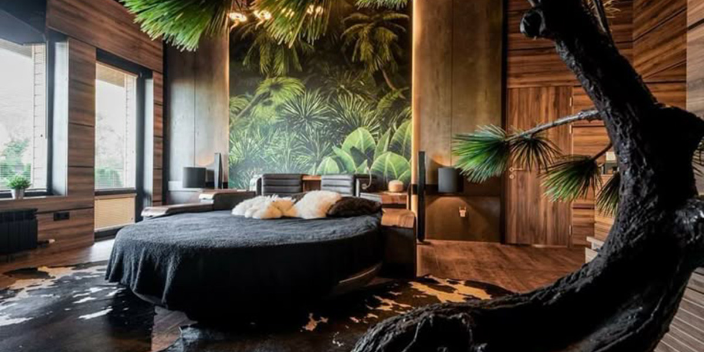

Designfilosofi och digitalt berättande
Oavsett om jag arbetar med fotojournalistik, digitala plattformar eller webbdesign drivs jag av att skapa tydliga, estetiska och tillgängliga upplevelser för användaren.

Jag heter Mariam Kasambula och studerar dubbla kandidatprogram inom Journalistik och digitala medier samt Digital affärsutveckling inom event och projekt vid Södertörns högskola. Jag har alltid fascinerats av hur fysiska miljöer påverkar oss och berättar historier utan ett enda ord.
Modern japansk arkitektur fångar just det – en balans mellan det råa och det poetiska, där minimalistisk betong möter varmt cederträ och genomtänkt ljusinsläpp.
Oavsett om jag arbetar med fotojournalistik, digitala plattformar eller webbdesign drivs jag av att skapa tydliga, estetiska och tillgängliga upplevelser för användaren.
